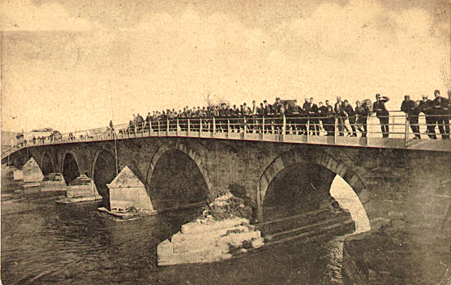
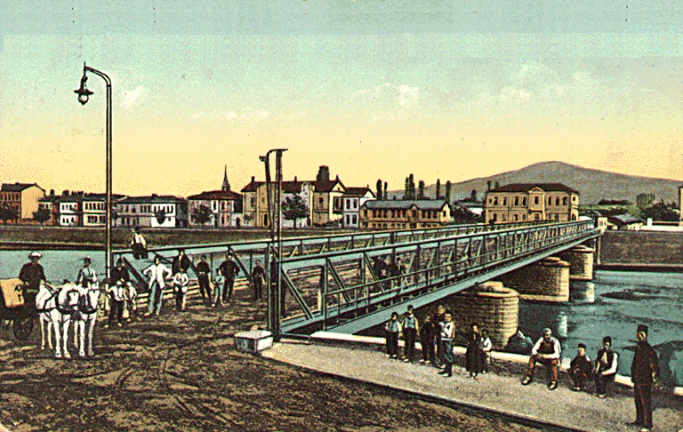
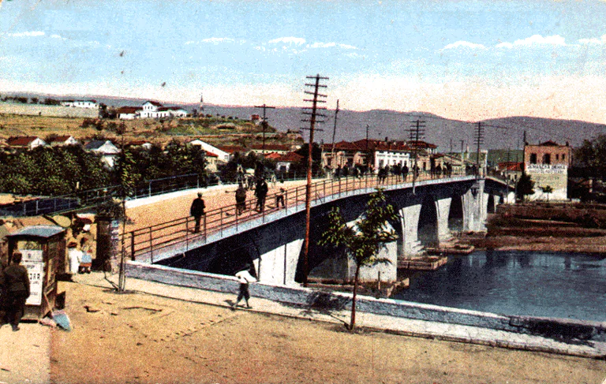
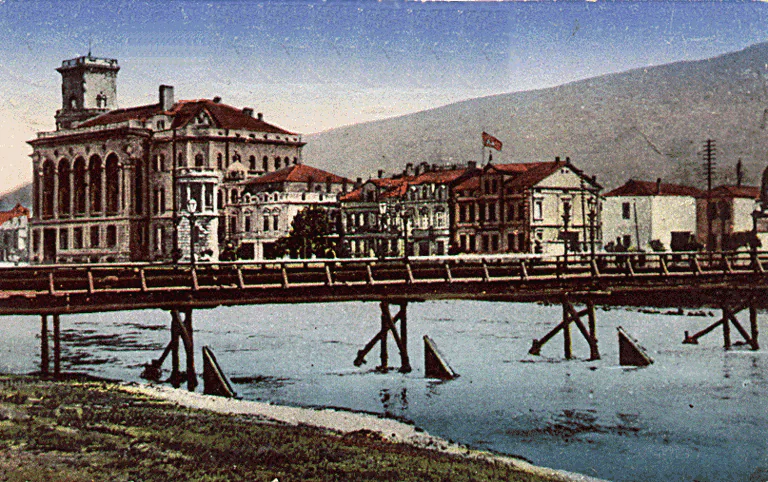
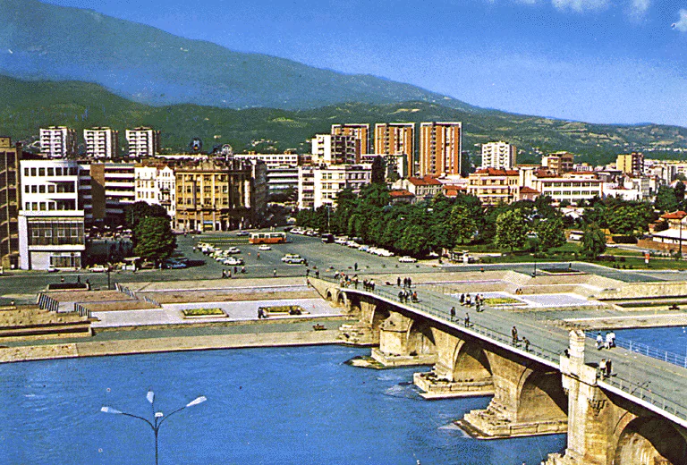

Skopje 1916 - 1917 Brücke
Dokumente aus den Balkankriegen
- Jahr
- 1916-1917
- Dauer
- 00:13

Im Zentrum der Stadt wurde über den Vardar eine monumentale Steinbrücke gebaut (im Volksmund Kamen Most, Steinbrücke). Nach einigen türkischen Quellen entstand sie in der zweiten Hälfte des 15. Jahrhunderts unter Sultan Mehmed II. Nach neuesten Untersuchungen von 1990 bei ihrer Rekonstruktion wird angenommen, dass sie zur Zeit Justinians I. im 6. Jahrhundert gebaut wurde. Sie besteht aus gut bearbeiteten Steinquadern; ihre Konstruktion ruht auf mächtigen Pfeilern, die durch 13 Rundbögen verbunden sind. 1905 wurden Betongehwege angelegt, die zuvor mit Brettern belegt waren. 1937 wurde sie durch Konsolen verbreitert, auf die die Gehwege verlegt wurden. Auf dem Foto Skopje Ende des 19. Jahrhunderts. Blick auf die Steinbrücke und die alte Platane. Oben rechts die Festung von Skopje - Kale mit der Kaserne.

Die Steinbrücke - Ende des 19. Jahrhunderts. Im Hintergrund links ist die Burmali-Moschee zu sehen.

Die Steinbrücke - Ende des 19. Jahrhunderts. Im Hintergrund links ist die Burmali-Moschee zu sehen.

Skopje Ende des 19. und Anfang des 20. Jahrhunderts (im Sommer) - Blick auf die Steinbrücke. Im Vordergrund ein Telefonmast mit Briefkasten. Gleich daneben eine Laterne, die erste Form städtischer Infrastruktur. Da es Sommer ist, schützen sich die Fußgänger mit Schirmen vor der Sonne. Für den Lastentransport dienten Ochsenkarren, die Pferdekutschen waren das öffentliche Verkehrsmittel der Bürger. Direkt rechts an der Brücke ist ein großes Mühlrad zu sehen.

Skopje Ende des 19. und Anfang des 20. Jahrhunderts (im Winter) - Blick auf die Steinbrücke. Im Vordergrund ein Telefonmast mit Briefkasten. Gleich daneben eine Laterne, die erste Form städtischer Infrastruktur. Zu erkennen sind ungepflasterte, schlammige Straßen. Im Hintergrund das jüdische Viertel und die Festung von Skopje - Kale.

Panorama der Steinbrücke Anfang des 20. Jahrhunderts.

Die Steinbrücke - um 1905. Im Hintergrund, oben links, ist die Festung von Skopje - Kale mit den Kasernen zu sehen. Rechts die alte Platane.

Die Steinbrücke Ende des 19. und Anfang des 20. Jahrhunderts. Rechts oben ist die Festung von Skopje - Kale zu sehen.

Skopje in der türkischen Zeit - Anfang des 20. Jahrhunderts. Auf dem Foto sieht man, dass eine Hälfte der Steinbrücke ein Steingeländer hat, die andere ein provisorisches Geländer aus Eisen und Holz. 1905 begann man, das Steingeländer durch ein eisernes zu ersetzen. In Skopje in der türkischen Zeit - Anfang des 20. Jahrhunderts. Auf dem Foto sieht man, dass eine Hälfte der Steinbrücke ein Steingeländer hat, die andere ein provisorisches Geländer aus Eisen und Holz. 1905 begann man, das Steingeländer durch ein eisernes zu ersetzen. In der linken Ecke, hinter der Steinbrücke, ist das türkische Theater zu sehen. Direkt rechts an der Brücke ein großes Mühlrad. Rechts die alte Platane, an der der Leichnam Karpošs gleich nach der Niederschlagung des Karpoš-Aufstands aufgehängt wurde - 1689. Im Hintergrund ist die Festung von Skopje - Kale vollständig zu sehen, dazu Wohnhäuser im jüdischen Viertel. Interessant ist das Bleichen von Leinen durch Frauen im klaren Wasser des Vardar - im Vordergrund des Fotos.

Eine Gruppe Türken auf der Steinbrücke - Anfang des 20. Jahrhunderts. Bemerkenswert ist, dass die Gehwege der Brücke mit Brettern belegt sind.

Die Eisenbahnbrücke über den Vardar in Skopje - Ende des 19. Jahrhunderts.

Steinbrücke über die Pčinja - Umgebung von Skopje (heute nicht mehr vorhanden). Gemessen an dem Mann auf dem Scheitel ist die Brücke etwa 15 Meter über dem Wasser. (1910er Jahre)

Skopje 1902. Auf dem Foto die Holzbrücke, dahinter das alte Kaffeehaus „Boges“, in dem die ersten Theateraufführungen stattfanden. Darüber die Festung von Skopje - Kale mit der Kaserne.

Die Steinbrücke - 1905. Links dahinter ist das Türkische Theater zu sehen, oben die Festung von Skopje - Kale.

Blick zum rechten Ufer des Vardar durch die Krone der alten Platane - um 1910. Zu sehen sind ein Teil der Steinbrücke, die Burmali-Moschee und die Läden davor.

Skopje vor 1912. Die Steinbrücke mit Konsolen und eisernem Geländer. Rechts die alte Platane, oben die Festung von Skopje - Kale.

Skopje während des Balkankrieges. Im Hintergrund die Burmali-Moschee.

Blick über einen Teil der Steinbrücke zur Festung von Skopje - Kale (um 1910)

Blick auf einen Teil der Steinbrücke, im Hintergrund links das türkische Theater. Darüber erhebt sich die Festung von Skopje - Kale. (um 1910)

Die Steinbrücke mit einer Gruppe von Menschen darauf - um 1913

Die Steinbrücke über den Vardar in Skopje - um 1913

Die Steinbrücke über den Vardar in Skopje - um 1913. Im Hintergrund rechts oben ist die Festung von Skopje - Kale zu sehen.

Skopje 1912 - ein Gemälde. Die Steinbrücke und die Burmali-Moschee. Im Hintergrund ein herrlicher grüner Gürtel aus Pappeln. Zu erkennen ist die Einfügung klassischer Architektur. Die neuen Kaiflächen sind ein neues städtisches Element. Die Gruppen von Wohn-, Händler- und Handwerkerbauten vor der Brücke sind in Gebrauch und Teil der Komposition, mit traditionellen Merkmalen und Elementen europäischer Einflüsse.

Die Eiserne Brücke über den Vardar in Skopje mit Blick auf die alte Schule, Hl. Mina und Hl. Muttergottes - um 1920.

Die Eiserne Brücke, erbaut 1905. Im Hintergrund das Gebäude der ersten Universität Skopje. (1915)

Die Eiserne Brücke, erbaut 1905. Im Hintergrund das Gebäude der ersten Universität Skopje. (1920er Jahre.)

Die Eiserne Brücke über den Vardar in Skopje, erbaut 1905. Im Hintergrund das Gebäude der ersten Universität Skopje. (1920er Jahre)

Die Eiserne Brücke, erbaut 1905. (1920er Jahre)

Die Eiserne Brücke über den Vardar in Skopje mit Blick auf die Gebäude am Kai „Dimitar Vlahov“. (1920er Jahre)

Skopje, um 1920. Ein Teil des Stadtplatzes vor der Steinbrücke. Die ersten Kioske für Dienstleistungen und Verkauf. Die Kioske haben eine betonte Architektur im Detail, d. h. in der Gestaltung der Dächer. Die Brücke ist durch Fußgängerkonsolen verbreitert. Oben im Hintergrund die Festung von Skopje - Kale.

Skopje, um 1920. Ein Teil des Stadtplatzes vor der Steinbrücke. Vor und auf der Steinbrücke sind kleine Bauten zu erkennen, an denen die Bürger mit Plakaten informiert wurden. Die Brücke ist durch Fußgängerkonsolen verbreitert. Im Hintergrund oben links die Festung von Skopje - Kale.

Die Steinbrücke mit einer Gruppe von Menschen, die den gestiegenen Wasserstand des Vardar betrachten. (1920er Jahre)

Die Steinbrücke - 1920. Im Hintergrund ist die Osmanische Bank zu sehen.

Blick über die Steinbrücke zur Altstadt und zum Viertel Pajko mit der Praxis des Zahnarztes Dr. Rubens und der Osmanischen Bank - um 1927.

Blick über die Steinbrücke zur Altstadt, zum Basar und zum Hang von Gazi Baba. Direkt an der Brücke rechts befand sich die Praxis des Zahnarztes Dr. Rubens. Etwas weiter rechts das Gebäude der Osmanischen Bank. Dazwischen lag ein kleiner Platz mit einem Kutschenstand. In der Mitte des Platzes stand das Denkmal für die Gefallenen des Balkankrieges - um 1927.

Blick über die Steinbrücke zur Altstadt, zum Basar und zum Hang von Gazi Baba. Direkt an der Brücke rechts befand sich die Praxis des Zahnarztes Dr. Rubens. Etwas weiter rechts das Gebäude der Osmanischen Bank. Dazwischen lag ein kleiner Platz mit einem Kutschenstand. In der Mitte des Platzes stand das Denkmal für die gefallenen Kämpfer - um 1927.

Blick über die Steinbrücke zur Altstadt und zum Viertel Pajko mit der Praxis des Zahnarztes Dr. Ruben und der Osmanischen Bank - um 1927.

Blick zum rechten Ufer des Vardar mit einem Teil der Brücke und dem Offiziersheim - 1930er Jahre. Links ist der Rest der gefällten alten Platane zu sehen, an der 1689 nach der Niederschlagung des Aufstands der Leichnam Karpošs aufgehängt wurde.

Blick auf einen Teil der Steinbrücke, die alte Platane und die Festung von Skopje - Kale - um 1920.

Skopje, um 1920. Die Steinbrücke mit der Festung von Skopje - Kale im Hintergrund. Im Vordergrund wird Leinen im klaren Wasser des Vardar gebleicht.

Blick auf den kleinen Holzsteg und den Kai am rechten Ufer des Vardar. Die Gebäude zeigen neoklassizistische und barocke Details. Die Straße ist die heutige „Ilindenska“. In der Häuserreihe steht auch die Musikmittelschule. Im Vordergrund der kleine Holzsteg, über den man zum Nationaltheater gelangte.

Der kleine Holzsteg über den Vardar, mit dem Offiziersheim im Hintergrund. Daneben die Gebäude der Bank und der alten Post - Ende der 1920er Jahre.

Blick auf den kleinen Holzsteg über den Vardar, im Hintergrund das Offiziersheim, die alte Post und die Bank - um 1930.

Blick zur Festung von Skopje - Kale mit der Kaserne. Darunter liegt das jüdische Viertel. Im Vordergrund der kleine Holzsteg - 1950er Jahre.

Blick auf das Nationaltheater und den kleinen Holzsteg - 1930er Jahre.

Die Steinbrücke - 1930er Jahre. Im Hintergrund das Nationaltheater, darüber die Festung von Skopje - Kale.

Blick auf einen Teil des Platzes und die Steinbrücke. Im Hintergrund links das Nationaltheater und die Festung von Skopje - Kale. Auffällig ist die Pferdekutsche als wichtigstes Verkehrsmittel der Bürger. Im Vordergrund abgerissene Gebäude für den Bau der Nationalbank - um 1930.

Hochwasser des Vardar. Die Brücke ist zur Hälfte überflutet. Das Foto wurde vom rechten zum linken Ufer hin aufgenommen - 1930er Jahre.

Rekonstruktion und Erneuerung des Kopfsteinpflasters der Steinbrücke. Blick auf den Ristić-Palast und die ersten Kioske - um die 1930er Jahre.

Blick von der Steinbrücke zum Platz. Links wird das Gelände für den Bau der Nationalbank geräumt - 1930er Jahre.

Blick vom linken Ufer des Vardar zur Steinbrücke und zum Offiziersheim - 1930er Jahre.

Die Steinbrücke über den Vardar - um 1930. Im Hintergrund das Nationaltheater, rechts oben die Festung von Skopje - Kale.

Die Steinbrücke - 1950er Jahre.

Ein Teil der Steinbrücke. Im Hintergrund das Hotel „Grand“. - 1960er Jahre

Die Steinbrücke mit der Festung von Skopje - Kale in den 1960er Jahren, vor der Neugestaltung des Kais.

Blick auf die Steinbrücke und die Festung von Skopje - Kale. (1970er Jahre)

Die Steinbrücke in den 1970er Jahren mit dem mittleren Kaibereich.

Die Steinbrücke und der Platz in den 1970er Jahren.

Blick vom rechten zum linken Ufer des Vardar, zur Steinbrücke, einem Teil des Platzes und der neuen Post im Hintergrund. (1970er Jahre)

Die heutige Brücke „Goce Delčev“, fotografiert von der Festung von Skopje - Kale. (1990er Jahre)

Dokumente aus den Balkankriegen
 Aquädukt4 Postkarten
Aquädukt4 Postkarten Kale30 Postkarten
Kale30 Postkarten Brücken60 Postkarten
Brücken60 Postkarten Kai58 Postkarten
Kai58 Postkarten Platz46 Postkarten
Platz46 Postkarten Bauten66 Postkarten
Bauten66 Postkarten Christliche Gotteshäuser19 Postkarten
Christliche Gotteshäuser19 Postkarten Muslimische Bauten33 Postkarten
Muslimische Bauten33 Postkarten Offiziersheim29 Postkarten
Offiziersheim29 Postkarten Theater28 Postkarten
Theater28 Postkarten Bahnhof13 Postkarten
Bahnhof13 Postkarten Schulen36 Postkarten
Schulen36 Postkarten Parks12 Postkarten
Parks12 Postkarten Märkte18 Postkarten
Märkte18 Postkarten Straßen38 Postkarten
Straßen38 Postkarten Panorama I60 Postkarten
Panorama I60 Postkarten Panorama II30 Postkarten
Panorama II30 Postkarten Collagen55 Postkarten
Collagen55 Postkarten Hochwasser9 Postkarten
Hochwasser9 Postkarten Erdbeben27 Postkarten
Erdbeben27 Postkarten Skopje 200026 Postkarten
Skopje 200026 Postkarten